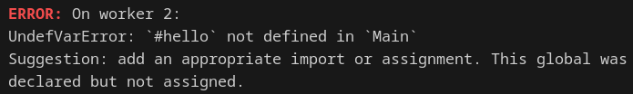
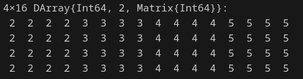

using Distributed
nprocs()
# addprocs(4)32025-04-22
@spawnat vs @asyncr = 0:nextpow(nprocs(),1_000_000_000)
futures = Array{Future}(undef, nworkers())
t = @elapsed begin
for (i, id) in enumerate(workers())
part_len = length(r) ÷ nworkers()
batch = 0:(part_len-1)
part_r = batch .+ (i-1)*(part_len)
futures[i] = @spawnat id part_pi(part_r)
end
p = sum(fetch.(futures))
end
t, p - pi
# (0.616588778, -8.195844003466846e-10)@threads for and @simd for?@distributed for?@distributed (+) for?| System Event | Actual Latency | Scaled Latency |
|---|---|---|
| One CPU cycle | 0.4 ns | 1 s |
| Level 1 cache access | 0.9 ns | 2 s |
| Level 2 cache access | 2.8 ns | 7 s |
| Level 3 cache access | 28 ns | 1 min |
| Main memory access (DDR DIMM) | ~100 ns | 4 min |
| Intel Optane memory access | <10 μs | 7 hrs |
| NVMe SSD I/O | ~25 μs | 17 hrs |
| SSD I/O | 50–150 μs | 1.5–4 days |
| Rotational disk I/O | 1–10 ms | 1–9 months |
| Internet call: SF to NYC | 65 ms | 5 years |
| Internet call: SF to Hong Kong | 141 ms | 11 years |
@everywhereEach process in procs() is independent, e.g. remote machine via SSH


We can add workers on remote machines using SSH
@distributed: good for reductions and relatively fast inner loops with limited data transferpmap: great for expensive inner loops that return a valueSharedArray: drop-in replacement for threading-like behaviors (single machine)DistributedArray: let the data do the work splitting